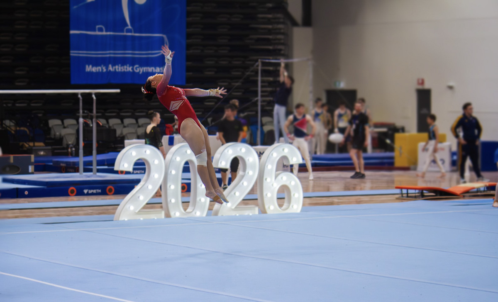
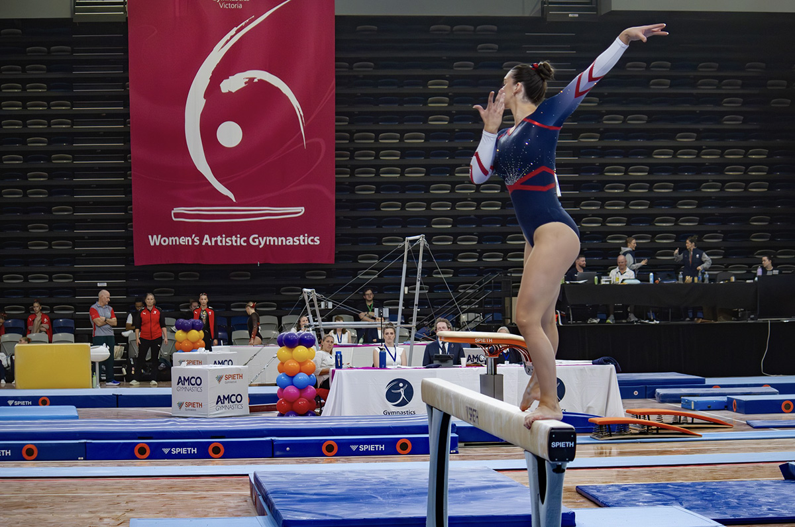
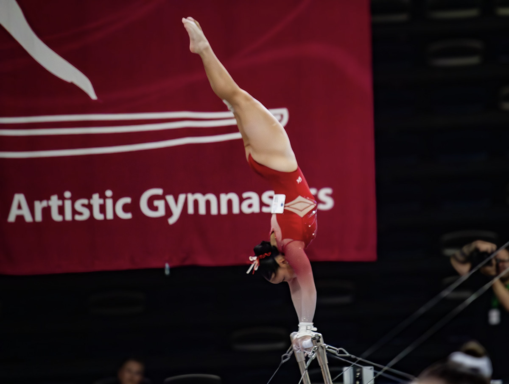
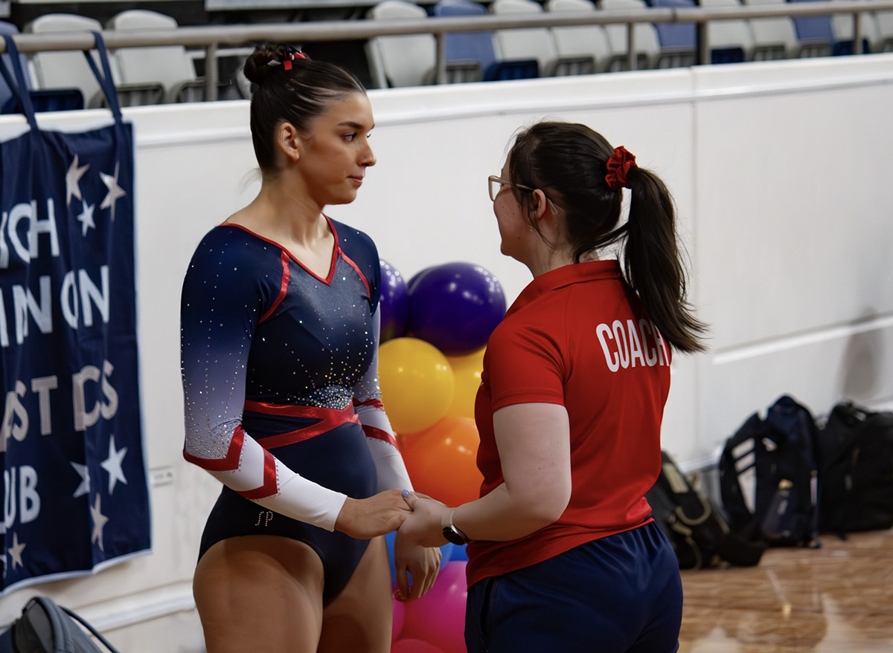

Does Difficulty Actually Win? A Gym Dad Digs Into the Data
What 3,400 competition results say about the D vs E trade-off in Victorian WAG
6 June 2026 · David "Tonko" Tonkin
TL;DR
A data analysis of over 3,400 Level 7+ Victorian WAG results finds that difficulty (D score) is a stronger predictor of competitive success than execution (E score) on most apparatus, but beam is the exception, elite clubs show no trade-off between the two, and a handful of athletes prove you can win on pure execution alone if it's exceptional enough.
I have a database. I dont sleep that much. I am a gym dad.
If you've spent any time at a gymnastics competition, you've probably heard the words "D score" and "E score" thrown around. Here's the short version: in modern WAG scoring, a gymnast's total on each apparatus is made up of two components. The D score is the difficulty score (it reflects the technical value of the skills in a routine, and it has no upper limit). The E score is the execution score (it starts at 10.0 and judges deduct from there for errors, wobbles, and form breaks). Add them together and you get the apparatus total.
A thought came to me recently: in Victorian gymnastics, which one matters more? Is it the athlete who pushes difficulty hard, or the one who executes cleanly on a simpler routine?
Worth noting upfront that this tension is not new. In the era of Nadia Comaneci, gymnastics operated under a pure-deduction system, where routines started at a fixed value of 10.0 and judges deducted for errors. Execution was everything. The 1976 Montreal Olympics produced seven perfect 10.0 scores, and Nadia, at 14 years old, was so flawless that the scoreboard couldn't display her mark and showed 1.00 instead. That era rewarded athletes for removing every mistake, not for adding more risk (thats not to say that Nadia wasn't doing hard stuff!). After controversies at the Athens 2004 Olympics, the Fédération Internationale de Gymnastique (FIG) moved to the modern open-ended D+E system, explicitly to give athletes greater credit for difficulty. The sport has been having this argument for fifty years. I just happen to have a database.
To be clear about what this is and isn't: I'm not a coach. I'm not a judge. I'm a gymnastics parent with access to competition data, a spreadsheet habit, and too many questions. What follows is pattern-spotting, not expertise.
Does Difficulty Actually Win?
I started by comparing first-placed athletes to those who finished fifth or lower, across all apparatus, for every Level 7 and above result in the database (Victorian results in 2025 and 2026). I looked at the absolute score gap: how many actual points separate winners from the rest o the field on each component, and what share of the total advantage each one accounts for.
Apparatus
D gap (rank 1 vs 5+)
E gap (rank 1 vs 5+)
D share of winner's advantage
Vault
+0.63
+0.32
67%
Floor
+0.66
+0.52
56%
Bars
+0.88
+0.93
49%
Beam
+0.62
+0.92
40%
The result is more complicated than simply saying "difficulty wins" . On vault, two thirds of the gap between first place and fifth place comes from D score, making difficulty the clear driver. Floor leans the same way. Bars is roughly balanced. And beam, as we will get to, actually tilts the other way.

Floor: D accounts for 56% of the winner's advantage
When it comes to the big guns, Simone Biles has more original skills named after her in the FIG Code of Points than most gymnasts ever attempt in a career. It's hard to imagine execution alone closing that kind of gap. Closer to home, on vault and floor, the Victorian data hints at something similar but operating at a much smaller scale.
Each Apparatus Tells a Different Story
Looking at the table, each apparatus seems to have its own personality.
It seens to me that Vault is the difficulty apparatus. Two thirds of the gap between winners and the field comes from D score. Winners are vaulting harder, and that's mostly what separates them. Floor follows a similar pattern, with D accounting for just over half the advantage.

Beam: the one apparatus where execution leads
Beam sits at the other end. On beam, 60% of the winner's advantage comes from execution, not difficulty. Winners on beam are separating themselves by being cleaner, not necessarily by attempting harder skills.
Bars falls almost exactly in the middle, with the D gap and E gap nearly identical in absolute terms. Both components seem to matter roughly equally on bars.
I don't have a coaching explanation for why beam specifically rewards execution so strongly. My best guess, as someone who only watches beam routines through a parent's nervous eyes, is that the apparatus itself punishes errors so visibly (a wobble, a step, a fall) that execution variance is simply higher on beam than anywhere else. The judges have more to work with on E score because the margin for error is so much narrower physically.
"Vault is the difficulty apparatus. Beam is the execution apparatus. Bars is genuinely both."
The 10-Position Effect
Another way to look at this: I split all athletes with five or more competition results into quartiles based on their average D score. How did the top 25% of difficulty performers place, on average, compared to the bottom 25%?
Top 25% D scorers finished around 8th on average. Bottom 25% D scorers finished around 19th. That's a gap of roughly 10 places in the leaderboard, and it holds across athletes competing at the same level, not just because Level 10 athletes have higher D scores than Level 7 athletes.*
* These are average finishing positions across individual all-around competition results in the database, not rankings from the season leaderboard on this site or any specific comp.
A caveat is worth naming here: correlation isn't causation. Athletes who push more difficulty are, in many cases, also more experienced, more trained, and competing at higher levels. It's hard to cleanly separate "difficulty causes better results" from "better athletes tend to have more difficulty." But it is still an interesting pattern.
The Secret of the Top Clubs: There's No Trade-Off
One question the data above raises immediately: "okay, but doesn't chasing difficulty hurt your execution? If an athlete tries harder skills, doesn't she wobble more, fall more, lose points on E score?"
I expected to find at least some evidence of a trade-off in the data. I didn't.

Bars: high club D and high club E tend to go together
Looking at clubs with enough results to compare (at least 20 results at Level 7 or above), there is no meaningful negative correlation between a club's average D score and their average E score. On bars, the correlation is actually strongly positive, with clubs that push difficulty on bars tending to have higher execution scores on bars, not lower. The clubs at the bottom on D score are not compensating with exceptional execution. They're just lower on both.
The clubs that lead the data (Waverley Gymnastics Centre, Athleta Gymnastics) are high on both difficulty and execution. They aren't making a choice between boldness and precision. They're doing both. The data doesn't show a trade-off because, apparently, mastering difficulty and mastering execution are not opposites. They seem to go together.
I haven't dug into enough of Simone Biles' historical results to make any claim about her execution scores specifically. But it's worth noting that the data pattern here (high difficulty not automatically
meaning lower execution) at least leaves open the possibility that the trade-off isn't as inevitable as intuition suggests. Whether Biles is an example of that, or whether her difficulty is simply so far
ahead that execution becomes secondary, is a question I'll leave to people who have actually watched her compete more carefully than I have.
The Execution Exception
None of this means the execution-first approach is wrong. There are athletes in this data who have placed in the top three at Level 8 and above with D scores below 3.0 (well below the average for their level), and they've done it by posting E scores that most athletes never reach.
A few examples from the data:
Athlete
Club
Level
Avg D
Avg E
Best result
Tia Phu
Niddrie Gymnastic Club
10
2.60
8.59
2nd
Yun Wang
Waverley Gymnastics Centre
8
2.89
8.16
1st
Chloe Drakopoulos
Pulse Gymnastics
8
2.56
8.21
3rd
Hermione Kapoulitsas
Essendon Keilor Gym Academy
9
2.63
8.11
3rd
Layla Muir
Eureka Gymnastics Club
10
2.66
8.10
3rd
These athletes are winning not by accumulating difficulty, but by making fewer mistakes than the field. E scores of 8.1 to 8.6 are not flawless by any measure, but the field average at these levels sits closer to 7.0, so being consistently in the 8s represents a real and meaningful margin over the competition. In a sport where everyone drops points, dropping fewer of them is its own competitive strategy.
There is a lineage here. Nadia competed in a system where this was the entire philosophy. Execution was the goal. Perfection was the ceiling. These athletes (Tia Phu placing second at Level 10 with 8.59 execution, Yun Wang winning at Level 8 with modest difficulty) are competing in a different era and a different system, but they're operating on the same principle: be so clean that the D score gap doesn't matter.
"It's possible to win on execution alone. But the E score required is almost impossibly high."
What the data does suggest is that this path is narrow. The athletes who pull it off are consistently sitting in the 8s on execution while the field averages closer to 7. Whether that means the E scores required are extraordinary, or whether these athletes simply found a strategy that works for them at their level, I genuinely don't know. But the data doesn't show many of them.
What Changes as Levels Increase
One of the more interesting patterns in the data is what happens to the D vs E balance as athletes progress through the levels.
At Level 7, execution accounts for roughly 63% of the advantage that winners hold over the field. In other words, at the entry point to scored difficulty, being cleaner is still the bigger separator. By Level 8 and 9 that flips, with difficulty accounting for around 56–62% of the winner's advantage. By Level 10 it evens out again, sitting close to 50/50.
The suggestion from the data is that the middle levels (roughly Level 8 and 9) are where difficulty starts to pay off most clearly. Athletes competing at those levels with more difficult routines seem to separate themselves in a way that clean-but-simpler routines can't easily match. Whether that reflects something about how those levels are judged, or simply how the field is distributed at that stage, I can't say.
There's also something happening to average E scores as levels increase. Despite athletes getting better and more experienced, average execution scores actually decrease from Level 7 to Level 10. This isn't because athletes execute worse at higher levels. My guess is that it's because harder skills produce more deductions. The difficulty goes up, and so does the cost of attempting it.
The sport made a version of this choice collectively when it moved from the old 10.0 system to the current Code of Points. What's visible in the Victorian data is a local echo of that same shift, and the middle levels of the program seem to be where that tension is most visible.
What a Coach Says
Data can only tell you so much, so I reached out to a few coaches to get a practitioner's take on the D vs E question. The response from Caitlin Dempsey, the Coaching & Education Manager at Knox Gymnastics, mapped closely to what the data was already suggesting, but with a clarity that a spreadsheet can't quite deliver.

Caitlin Dempsey, Knox Gymnastics
"For our club, the focus is on finding the right balance of difficulty to remain competitive, ensuring we meet all requirements while maximising available bonus opportunities. Most importantly, though, every skill included in a routine must be performed well. There's little value in adding difficulty if the execution deductions outweigh the benefit of the skill's value.
From my perspective, it's also about getting the best return on the time and effort invested in training. Skills that satisfy multiple composition requirements, or fulfil a requirement while also earning bonus, provide significant value and are often the most worthwhile additions to a routine."
One of the coaches I spoke to, declining to be named on this particular line, put it rather more directly:
"Hit the requirements, do them well, and get off the apparatus."
Knox's own data gives some context to that philosophy. Across their Level 7 and above all-around competition results in the database, Knox athletes averaged a finishing position of around 13th, compared to a field-wide average of around 14th. Competitive, and close to the centre of the field.
The apparatus breakdown is interesting. Knox's average D score on vault (3.12) and floor (3.47) both sit modestly above the field averages (2.92 and 3.35 respectively). On bars, their average D of 2.11 sits below the field average of 2.49. Beam sits close to the field average on both components. Whether that reflects deliberate apparatus-by-apparatus planning or simply where the current squad sits in development, the data can't say. But it looks consistent with the approach Caitlin described: finding the right return for each apparatus rather than chasing difficulty uniformly across the board.
The data is saying something similar from the other direction. A routine packed with low-value skills that each attract a deduction of 0.3 or more will bleed points faster than the difficulty earns them. The spreadsheet and the coach are pointing at the same thing.
The data also holds an interesting contrast. Funtastic Gymnastics is no longer competing, with their coaches and athletes having moved to Melbourne Acrobatic Gymnastics Academy, but their results remain in the dataset as a record of a club that took a distinctly execution-first approach. Their vault D averaged 2.80, below the field average of 2.92, while their vault execution of 8.67 was among the highest of any club in the data. Beam and floor execution told a similar story. Their average competitive rank came out around 10th, better than the field average. A different-looking set of numbers from Knox, a different approach, and a competitive result regardless.
What I'm Actually Concluding (Not Much)
I want to be careful here, because the data can be read in ways I'm not qualified to endorse.
None of this data tells a club what to do. There are reasons clubs develop execution-focused routines (managing injury risk, building confidence, developing long-term technique). There are reasons athletes with lower D scores might be placed exactly where they should be on the development pathway. None of that shows up in a spreadsheet.
What the data does suggest is that difficulty and execution both matter, but in different ways depending on the apparatus and the level. Vault and floor lean toward difficulty. Beam leans toward execution. Bars sits in the middle. And at the levels where athletes are building toward elite, difficulty seems to become progressively more important before evening out again at Level 10. It also says that the clubs at the top of the competition results aren't buying their results by trading execution for difficulty. They're doing both.
And it says that Tia Phu placing second at Level 10 with an average D score of 2.6 is genuinely remarkable, not a failure of difficulty, but a demonstration of execution at a standard that most athletes never reach.
The data asks good questions. I'll leave the answers to people who know more than I do.
See the full season leaderboards
Track every Victorian club and athlete across WAG and MAG, updated throughout the season.